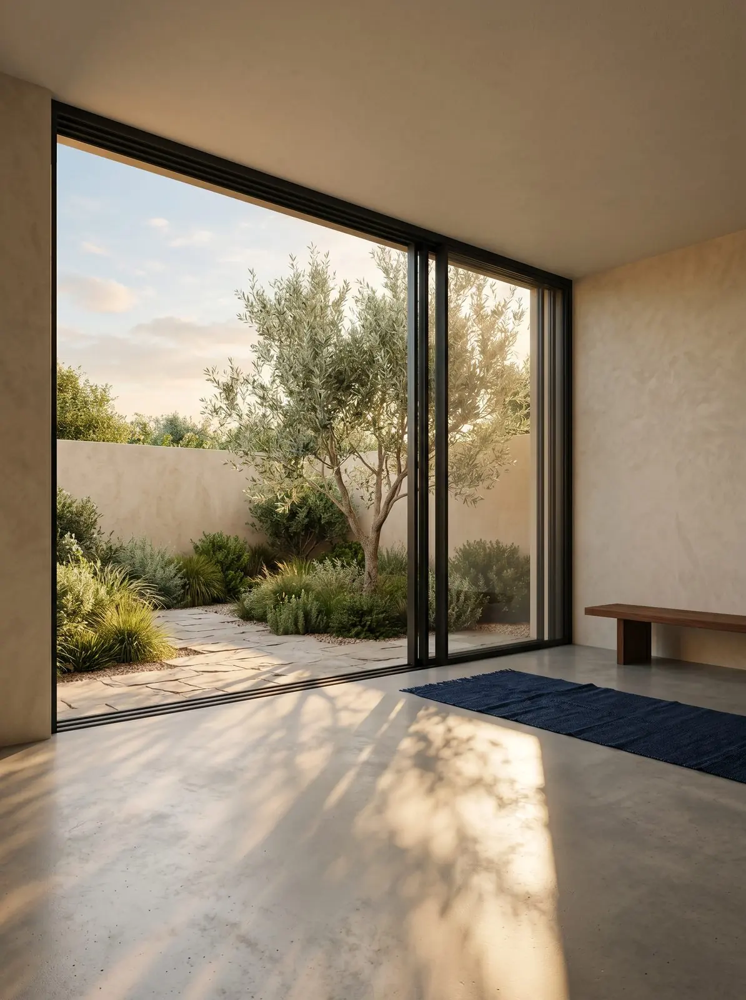

Finestre · scorrevoli
Quattro scorrevoli. Quello giusto dipende dalla tua apertura.
Grandi vetrate, aperture sul giardino, logge: in showroom li provi tutti, aperti e chiusi.
A chi serve
A chi vuole aprire la casa sul giardino o sul terrazzo, a chi ha una grande vetrata da sostituire, a chi vuole più luce senza più telaio.
Perché lo scegliamo
Sopra i tre metri di anta il dettaglio conta più del marchio: peso del vetro, binario a pavimento, punti di tenuta. Per questo partiamo dal sopralluogo e, se serve, dalla predisposizione del massetto.
Le quattro famiglie
Quale scorrevole?
| Scorrevole | Per chi | Fino a |
|---|---|---|
| Minimale MX 166, a binario nascosto | Massima trasparenza, telaio quasi invisibile nel muro e nel pavimento | anta 3.500 × 3.000 mm |
| Panoramico tutto vetro | Quando vuoi che resti solo il vetro: logge, verande, dehors | lastra 3.000 × 2.800 mm |
| Alzante scorrevole | Grandi aperture sul giardino, chiusura morbida e totale | anta 3.500 × 2.800 mm |
| Tradizionale | La soluzione equilibrata per balconi e terrazzi | anta 2.500 × 2.500 mm |
Vieni a vederlo
In showroom si tocca.
Aperto e chiuso, nelle finiture vere. Ti spieghiamo pregi e limiti senza fretta.
Domande frequenti
Lo scorrevole isola come una finestra a battente?
Gli alzanti e il minimale a taglio termico sì, con valori vicini a quelli dei battenti. Il panoramico tutto vetro è una chiusura, non un serramento termico: va bene su logge e verande.
Serve un intervento sul pavimento?
Per il minimale e per avere la soglia a filo sì: il binario va annegato nel massetto. Per questo conviene deciderlo presto, in fase di lavori.
Dove installiamo
Dove installiamo
Da Vigano di Gaggiano a Milano Sud e Milano Ovest, con i nostri tecnici e i nostri posatori.

Showroom · Vigano di Gaggiano